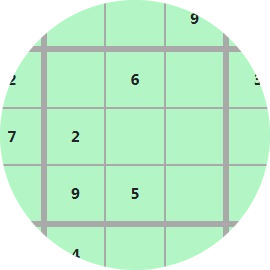
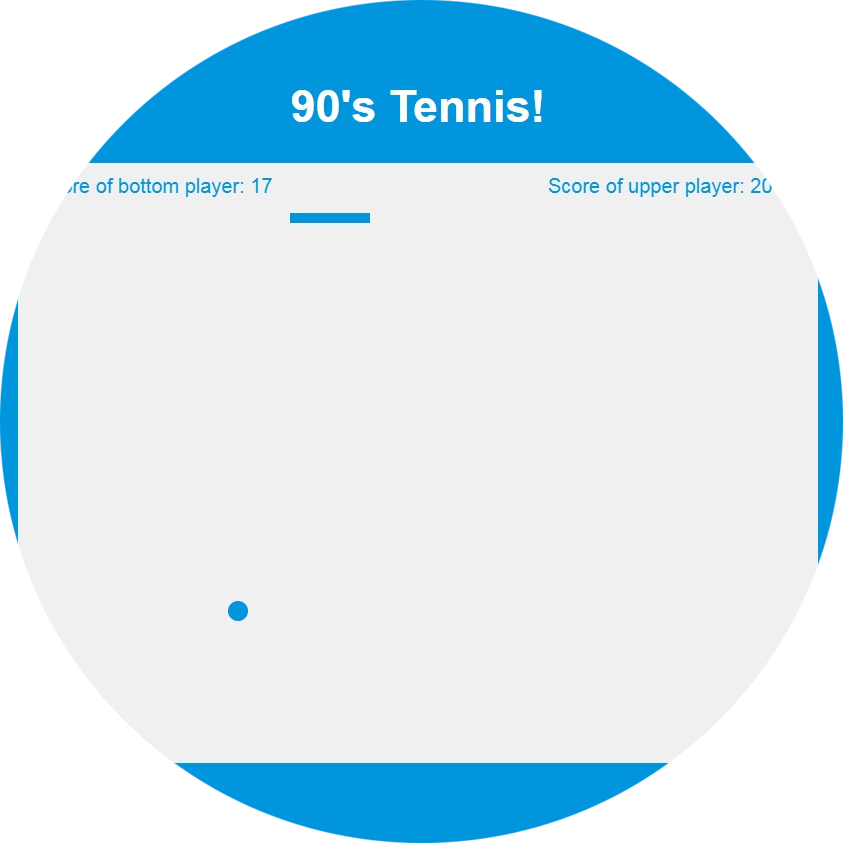
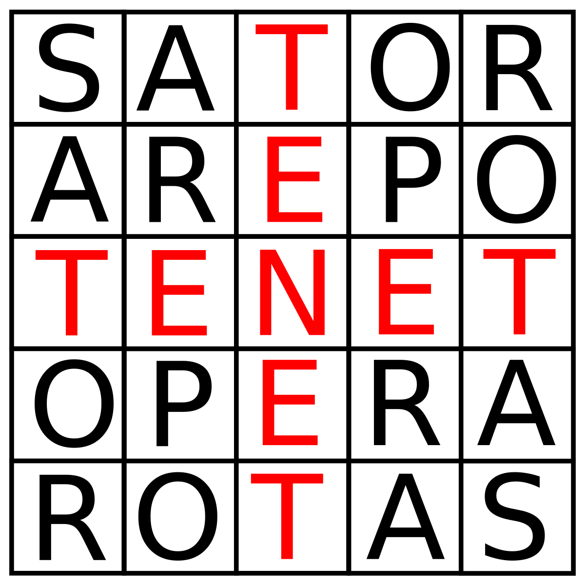

| Name: | Oleksii |
| Surname: | Yaremchuk |
| phone: | 098-03-77-841 |
| gmail: | mryaremchyk@gmail.com |
experience
I've worked like a Salesforce developer about two years. Have experiance with Apex, LWC and native Salesforce admin tools. I have many projects related with integration, used Celigo integration app also one of my projects was related with QuickBook integration it required create an API on .NET platform, it was long-term project, so I've got a lot of experience with C# language. Also I had a lot of "pet" projects, in general written with NODEJS, if you visit my GitHub account you can see all my projects. But in the list below I highlighted the ones I'm most proud of
websites

News
Sudoku

Easy calculation
90's tenis
Salesforce QuickBook integration
Palindrom counter
My Telegram bot

URL to PDF converter
This is my most useful project. In this project I've used Nest.js framework
graduation and courses
In 2019, I had finished National University of Ivan Franko and got master degree in Applied Statistics. My education was not related with tech, but at university, we often used different kind of software packages as like SPSS, Statistica and programming language named R. Thus I've started getting interested in tech.
After university I've finished basic programming courses and created few websites and several desktop application. There you can see my certificates.
Salesforce platform developer II
Salesforce platform developer I
Salesforce platform app builder
Python
Web UI
HTML5/CSS3/JAVASCRIPT FUNDAMENTALS